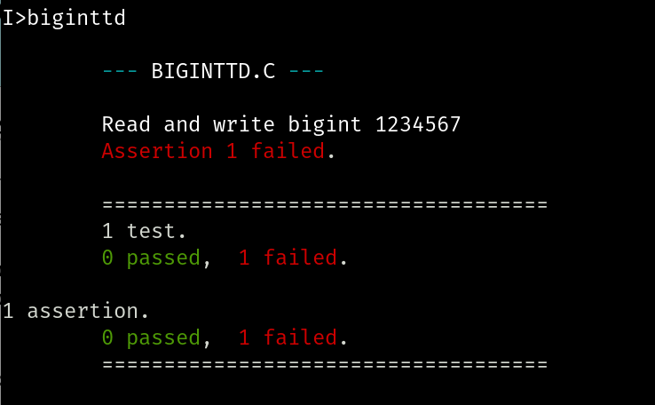

Overview
Happy New Year! This week we will continue to develop the arbitrary precision integer in C on the Intel 8080 processor that we began the week before winter break.
Monday and Tuesday, January 5th and 6th
Intro
We'll start the new year by introducing a testing tool that two students, Akshay Kuchibhatla and Caleb O'Neil, developed last year. You can find their code and documentation here.
Here is a struct we can use to start our bigint data
type, split it two files:
BIGINT.H:
struct bigint {
char negative;
char numdigits;
char* digits;
};
void set_bigint();
char* get_bigint();
and BIGINT.C:
#include <stdio.h>
#include "BIGINT.H"
void set_bigint(numstr, num)
char *numstr;
struct bigint *num;
{
char last_pos, i;
num->negative = (numstr[0] == '-');
num->numdigits = strlen(numstr) - num->negative;
num->digits = alloc(num->numdigits);
last_pos = num->numdigits + (num->negative ? 0 : -1);
for (i = 0; i < num->numdigits; i++) {
num->digits[i] = numstr[last_pos-i];
/* printf("numstr[%d] is %c\n", last_pos-i, numstr[last_pos-i]); */
}
}
char* get_bigint(num)
struct bigint *num;
{
char *numstr;
char start_pos, i;
numstr = alloc(num->numdigits + (num->negative ? 2 : 1));
start_pos = num->negative;
if (start_pos == 1) numstr[0] = '-';
for (i = 0; i < num->numdigits; i++) {
numstr[i+start_pos] = num->digits[num->numdigits-(i+1)];
/* printf("numstr[%d] is %c\n", i, numstr[i+start_pos]); */
}
numstr[num->numdigits+start_pos] = '\0';
return numstr;
}
Here is a program, BIGINTTD.C, to test it:
#include "BIGINT.H"
#include "BDSCTEST.H"
main() {
START_TESTING("BIGINTTD.C");
TEST_CASE("Read and write bigint 1234567") {
struct bigint bi;
set_bigint("1234567", &bi);
ASSERT_STR(get_bigint(bi, "1234567"));
}
END_TESTING();
}
Over the winter break I compiled and linked these with the following sequence of commands:
I>cc bigint I>cc biginttd I>clink biginttd bigint
which generated BIGINTTD.COM. Running it, I got:

I did not figure out why these tests are failing. That will be our first task for 2026.
Classwork / Homework / Evaluation
Everyone should reproduce the failing tests from the screenshot on their own computers.
Our goal will be to get these first tests working to be able to read and write
our BigInt values. That's a big lift, I understand, so we will
adjust plans and expectations according to our progress.